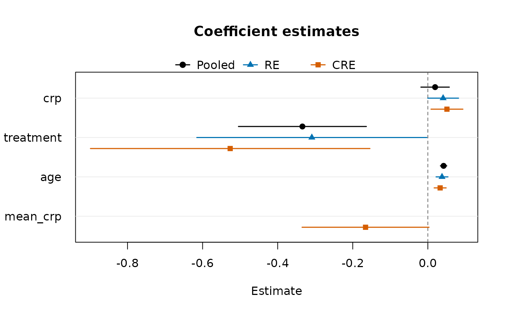

Dot-and-whisker plot of the coefficients of one or more fitted models, terms on the vertical axis and Wald confidence intervals as horizontal segments. Several models are drawn side by side for each term (dodged vertically, with distinct plotting symbols and colours and a legend), so that, for example, pooled, fixed-effects, random-effects and correlated random effects fits of the same specification can be compared in one figure. Every term present in at least one model is shown; a model that does not contain a term has no mark on that row. The left margin is widened to the longest term label so that no label is clipped.
Usage
coefplot(
...,
parm = NULL,
level = 0.95,
labels = NULL,
main = "Coefficient estimates",
xlab = "Estimate",
col = NULL,
pch = NULL,
ref = 0
)Arguments
- ...
fitted models, or a single unclassed list of fitted models. Argument names are used as legend labels.
- parm
names or positions (in the order the terms first appear across the models) of the terms to plot; by default every term except
"(Intercept)"- level
confidence level of the intervals
- labels
legend labels of the models; by default the argument names, or the deparsed arguments
- main
plot title
- xlab
horizontal-axis label
- col
colours of the models, recycled
- pch
plotting symbols of the models, recycled
- ref
position of the dashed reference line;
NULLfor none
Details
Any fitted object with coef() and vcov() methods can be used, e.g.
panglm(), paniv(), pangmm(), panfmm() or twopart() fits, and
also stats::glm() fits. When vcov() fails or has no entry for a term,
only the estimate is drawn.
See also
Other panglm methods:
confint.panglm(),
effectcurve(),
fitted.panglm(),
fixef(),
glance.panglm(),
logLik.panglm(),
model.matrix.panglm(),
partialeffects.panordered(),
plot.panglm(),
plot.panglm_ape(),
plot.panglm_effectcurve(),
predict.panglm(),
predict.panordered(),
residuals.panglm(),
summary.panglm(),
tidy.panglm(),
vcov.panglm()
Examples
data(copd)
f <- exacerbations ~ crp + treatment + age
pool <- panglm(f, data = copd, index = c("id", "visit"),
model = "pooling", family = "poisson")
re <- panglm(f, data = copd, index = c("id", "visit"),
model = "random", family = "poisson")
cre <- panglm(f, data = copd, index = c("id", "visit"),
model = "random", family = "poisson", cre = TRUE)
coefplot(Pooled = pool, RE = re, CRE = cre)
